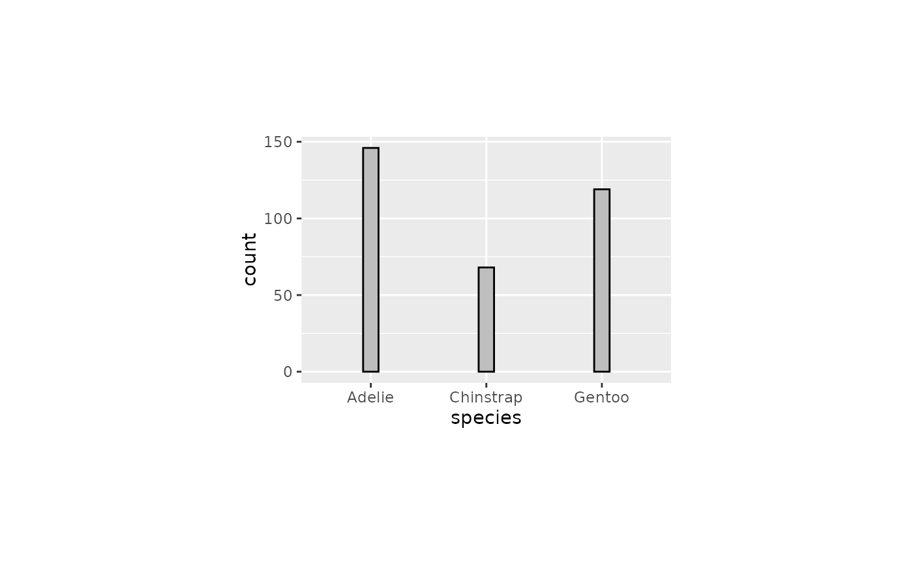
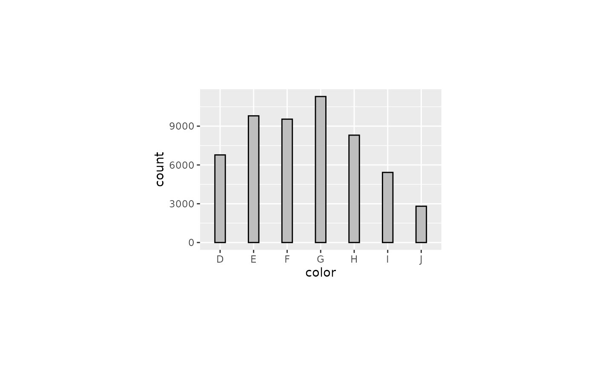
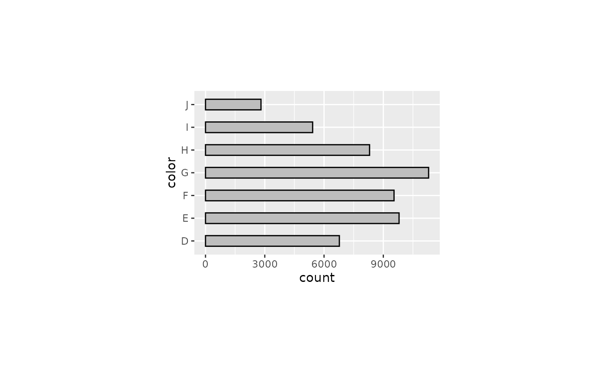
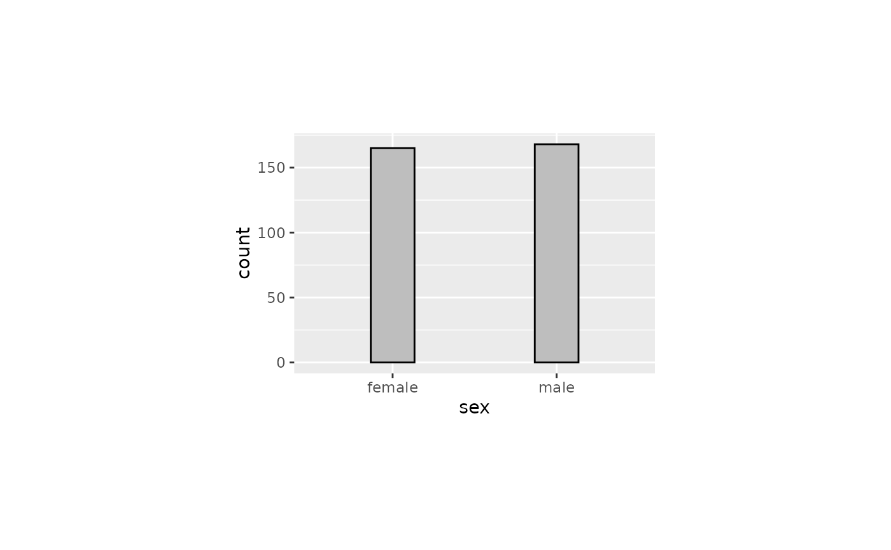
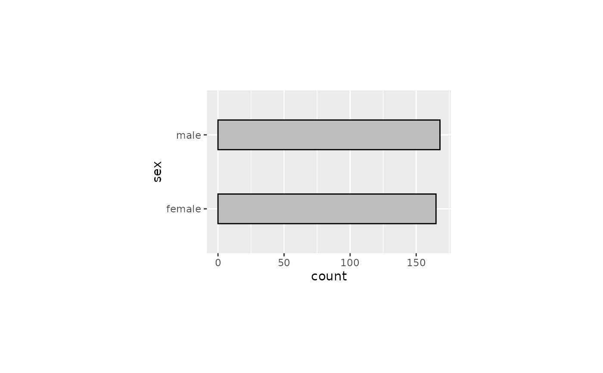
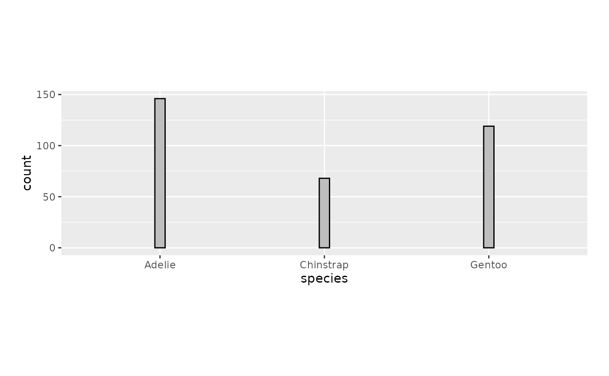

Standardise the width in 'ggplot2' geoms to appear visually consistent across plots with different numbers of categories, panel dimensions, and orientations.
This can be used in geoms such as ggplot2::geom_bar()/ggplot2::geom_col(), ggplot2::geom_boxplot(), ggplot2::geom_errorbar().
Usage
get_width(
...,
n = NULL,
n_dodge = NULL,
orientation = "x",
equiwidth = NULL,
panel_widths = NULL,
panel_heights = NULL
)Arguments
- ...
Reserved for future use. Requires named arguments.
- n
Number of categories in the orientation aesthetic (i.e.
"x"or"y"). For faceted plots, use the maximumnwithin a facet.- n_dodge
Number of dodge categories. Must match the number of groups in the
fillorcolouraesthetic when usingposition_dodge().- orientation
Orientation:
"x"for vertical (width appearance equiwidth to panel width),"y"for horizontal (width appearance equiwidth to panel height).- equiwidth
Numeric. Multiplicative factor that controls the width appearance. A value of
1(default) is the default. Increase to make a wider appearance, and decrease to make a thinner appearance. IfNULL, uses the value set byset_equiwidth(), falling back to1.- panel_widths
A
grid::unitobject specifying the panel width. IfNULL(default), uses the value set in the current theme.- panel_heights
A
grid::unitobject specifying the panel height. IfNULL(default), uses the value set in the current theme.
Value
A numeric width value passed to the width argument of
geom_bar(), geom_col(), or similar geoms.
Examples
library(ggplot2)
library(dplyr)
#>
#> Attaching package: ‘dplyr’
#> The following objects are masked from ‘package:stats’:
#>
#> filter, lag
#> The following objects are masked from ‘package:base’:
#>
#> intersect, setdiff, setequal, union
set_theme(
theme_grey() +
theme(panel.widths = rep(unit(75, "mm"), 2)) +
theme(panel.heights = rep(unit(50, "mm"), 2))
)
set_equiwidth(1)
# Example 1: Basic bar chart with 3 species (x-axis)
palmerpenguins::penguins |>
filter(!is.na(sex)) |>
ggplot(aes(x = species)) +
geom_bar(
width = get_width(n = 3),
colour = "black",
fill = "grey",
)

# Example 2: Bar chart with 7 diamond colors (x-axis)
diamonds |>
ggplot(aes(x = color)) +
geom_bar(
width = get_width(n = 7),
colour = "black",
fill = "grey",
)

# Example 3: Horizontal bar chart with 7 diamond colors (y-axis)
diamonds |>
ggplot(aes(y = color)) +
geom_bar(
width = get_width(n = 7, orientation = "y"),
colour = "black",
fill = "grey",
)

# Example 4: Dodged bar chart by sex, filled by species (x-axis)
palmerpenguins::penguins |>
filter(!is.na(sex)) |>
ggplot(aes(x = sex, fill = species)) +
geom_bar(
position = position_dodge(preserve = "single"),
width = get_width(n = 2, n_dodge = 3),
colour = "black",
fill = "grey",
)

# Example 5: Horizontal dodged bar chart by sex, filled by species (y-axis)
palmerpenguins::penguins |>
tidyr::drop_na(sex) |>
ggplot(aes(y = sex, fill = species)) +
geom_bar(
position = position_dodge(preserve = "single"),
width = get_width(n = 2, n_dodge = 3, orientation = "y"),
colour = "black",
fill = "grey",
)

# Example 6: Faceted horizontal bar chart with free y scales
d <- tibble::tibble(
continent = c("Europe", "Europe", "Europe", "Europe", "Europe",
"South America", "South America"),
country = c("AT", "DE", "DK", "ES", "PK", "TW", "BR"),
value = c(10L, 15L, 20L, 25L, 17L, 13L, 5L)
)
max_n <- d |>
count(continent) |>
pull(n) |>
max()
d |>
mutate(country = forcats::fct_rev(country)) |>
ggplot(aes(y = country, x = value)) +
geom_col(
width = get_width(n = max_n, orientation = "y"),
colour = "black",
fill = "grey",
) +
facet_wrap(~continent, scales = "free_y") +
scale_y_discrete(continuous.limits = c(1, max_n)) +
coord_cartesian(reverse = "y", clip = "off")
 # Example 7: Bar chart with a custom panel width override
palmerpenguins::penguins |>
filter(!is.na(sex)) |>
ggplot(aes(x = species)) +
geom_bar(
width = get_width(n = 3, panel_widths = unit(160, "mm")),
colour = "black",
fill = "grey",
) +
theme(panel.widths = unit(160, "mm"))
# Example 7: Bar chart with a custom panel width override
palmerpenguins::penguins |>
filter(!is.na(sex)) |>
ggplot(aes(x = species)) +
geom_bar(
width = get_width(n = 3, panel_widths = unit(160, "mm")),
colour = "black",
fill = "grey",
) +
theme(panel.widths = unit(160, "mm"))
